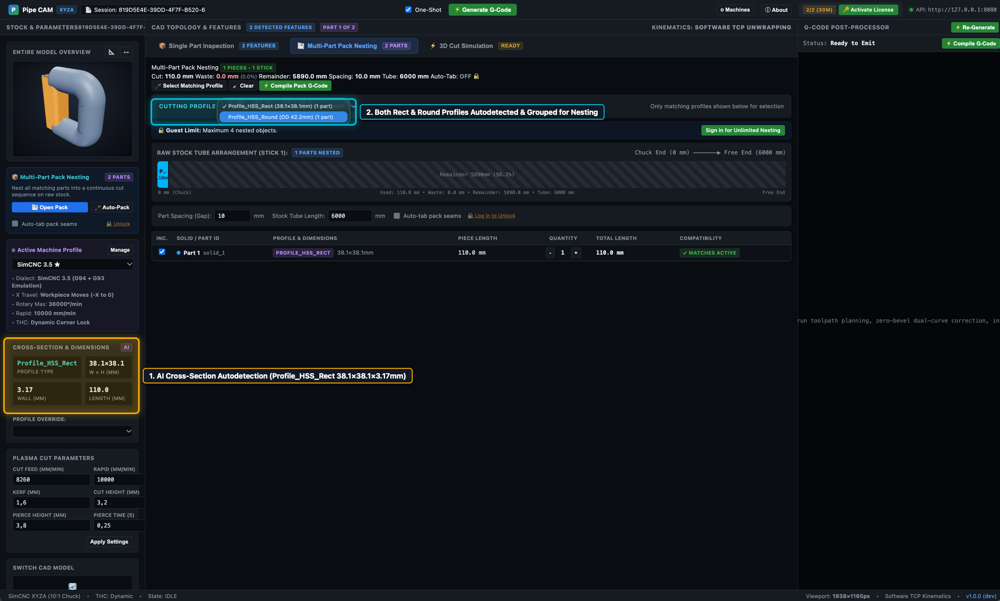
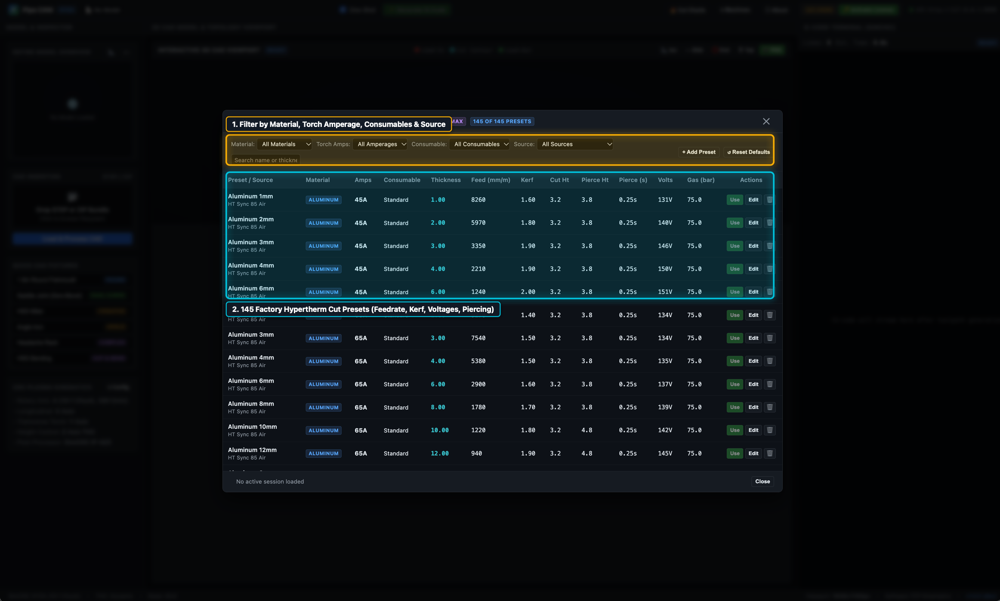

Operator Guides & CAM Workflows
Follow our step-by-step visual walkthroughs and technical references to configure your 4-axis rotary plasma kinematics, tune per-contour lead-ins and zero-bevel compensation, pack multi-tube STEP assemblies onto raw stock sticks, unfold bent HSS & HSS-O sticks with kerf relief cuts, inspect release changelogs, model Fusion 360 Structural Member assemblies for AI profile autodetection, and set up motion-synchronized M62/M63 torch control & 3D ramp lead-ins in SimCNC.
 TUTORIAL 01 • 5 STEPS
TUTORIAL 01 • 5 STEPS
Basic Machine Configuration
Configure your 4-axis CNC plasma kinematics, controller dialect (G94 vs. G93 inverse-time), synchronous Torch Height Control (THC) locking, and default zero-bevel & corner-loop parameters.
- Velocity, acceleration, jerk & Safe Z clearance limits
- SimCNC G94+G93 emulation vs. native G93 inverse-time
- Synchronous M62/M63 THC locking during corner slowdowns
- Creating, cloning & persisting multiple machine profiles
 TUTORIAL 02 • 8 STEPS
TUTORIAL 02 • 8 STEPS
UI Layout & STEP Cut Path Configuration
Tour the 3D CAD assembly inspector, switch between individual tube solids, inspect lead-in/cut/lead-out contours, apply Zero-Bevel Dual-Curve compensation on a saddle joint, and verify in 3D simulation.
- Entire Model Overview & Active CAD Solid switching
- 3D part preview & interactive contour selection (`ENDCUT`)
- Per-contour Lead-In, Lead-Out, Corner Loop & Zero-Bevel (80%)
- Full 4-axis (XYZA) 3D toolpath simulation & live DRO
 TUTORIAL 03 • 6 STEPS
TUTORIAL 03 • 6 STEPS
Multi-Part Stick Nesting
Load a complex 37-part Headache Rack assembly, filter parts by detected cross-section profile, automatically pack 17 matching tubes across two 6000 mm sticks at 99.8% efficiency, and export per-stick G-code.
- Automatic cross-section profile detection & filtering
- Multi-stick 1D bin packing with configurable part spacing
- One-click Pack G-Code compilation for all sticks
- Per-stick `.nc` download & 3D multi-stick simulation
 TUTORIAL 04 • 5 STEPS
TUTORIAL 04 • 5 STEPS
Bending HSS & HSS-O Sticks
Load a 3D bent tube STEP fixture, automatically unfold its 3 bends into a straight stick with kerf-bending relief slots, customize cut counts (`3 → 5`) and spine bridge width (`Edge Left: 30 mm`), preview in 3D, and download G-code.
- Automatic 3D bent-tube spine detection & unfolding
- Collapsible per-bend relief cut inspection (`▸ Cuts (3)`)
- Custom relief cut count (`5`) & living-hinge spine (`Edge Left: 30 mm`)
- 3D straight-stick Cut Preview & one-click `.nc` export
 TUTORIAL 05 • 3 STEPS • DIAGNOSTICS & STORAGE
TUTORIAL 05 • 3 STEPS • DIAGNOSTICS & STORAGE
Build Information & Changelog
Open the built-in `ⓘ About` modal from the top-right header bar to verify your installed version, Git commit hash, and license status, locate saved machine profiles, cut charts and offline licenses on disk (macOS, Windows, Linux), browse release highlights, and copy system diagnostics.
- Top-right `ⓘ About` quick access from any workspace tab
- Version, Git commit hash, platform & license status table
- Local file locations: machine profiles, cut charts & offline licenses
- One-click `📋 Copy Diagnostics` for support tickets

TUTORIAL 06 • 8 STEPS • 11 SCREENSHOTSFusion 360 & AI Profile Autodetection
Design 2D centerline sketches and 3D tube assemblies in Autodesk Fusion 360 using the Structural Member (`SM`) add-in, combine contiguous bend segments, export a full-design STEP file, and watch RotaryCAM automatically identify every tube size and wall thickness.
- Why Fusion 360 + Structural Member (`SM`) is required today
- Drawing 2D centerline sketches & applying ANSI/AISC HSS/Pipe profiles
- Using `Modify → Combine` (`Join`) for Cut-and-Bend support
- Full-assembly STEP export & zero-click `AI` profile detection
SimCNC Motion-Sync Torch & 3D Ramp Lead-Ins
Configure SimCNC's `ExternalTrajCtrl` (`M62/M63 P0/P1`), direct CSMIO/IP-M `Arc OK` polling, and `___CONF.py` / `m3.py` / `m5.py` macros—required for RotaryCAM's 3D Ramp Lead-In and Zero-Overburn Early Extinguish features.
- Reassigning Torch Fire (`P1`) & THC Lock (`P0`) to `ExtTrajSyncOut`
- Solving SimCNC's stationary `M62/M63` constraint via `<1.5 ms` Z micro-wiggle
- On-the-fly `M63 P1` Zero-Overburn arc extinguish without motion stalls
- Parameter `#1113` / `#1110` / `Z#3` handshake for 3D Ramp Lead-Ins

TUTORIAL 08 • 6 STEPS • VISUAL GUIDEPlasma Cut Charts & Feature Toggles
Browse 145 factory Hypertherm Powermax cut charts, match feedrates and voltages automatically to your tube's wall thickness, tweak cut parameters on the fly, and omit secondary holes or slots with a single click.
- 145 built-in Hypertherm presets (Mild Steel, Stainless, Aluminum)
- Automatic STEP wall-thickness matching with manual override
- Editing kerf, feedrates, arc voltage, pierce height & cut air
- Selective feature toggling (holes/slots/notches) with live G-code updates
Offline MCP & AI Automation
Connect Claude Desktop, Cursor, or LM Studio to RotaryCAM's 100% offline `rotarycam-mcp` stdio server. Calculate drive kinematics from pitch and gear ratios, inspect STEP files, apply zero-bevel copes, and generate G-code air-gapped.
- 100% offline stdio server for macOS, Linux, and Windows
- First-principles drive math (rack-and-pinion, ballscrew, rotary)
- STEP CAD feature extraction & dual-curve zero-bevel compensation
- Headless G-code generation & interactive 3D WebGL handoff
Recommended First-Time Setup Sequence
If you are setting up RotaryCAM on your rotary plasma table, start with Tutorial 01: Basic Machine Configuration and Tutorial 07: SimCNC Motion-Synchronized Torch & 3D Ramp Lead-Ins. RotaryCAM calculates true surface cutting speeds and rotary motion limits directly in software. Setting your table's true axis speeds and wiring ExtTrajSyncOut0/1 (M62/M63 P0/P1) ensures your torch runs at steady cutting feedrates with zero divots and spatter-free 3D ramp lead-ins.